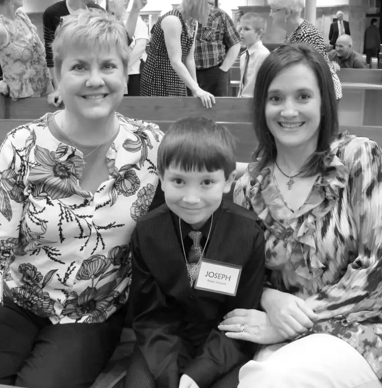

I remember, as a child, seeing someone on television crying, and I couldn’t figure out why. Everything about the circumstances seemed festive, positive. It might even have been Miss America accepting her crown.
What was the deal with the tears? I had know.
“Why is she crying mommy?” I asked.
“Because she’s happy.”
Now I was really confused! Of course, as an adult, I understand the concept of tears of joy. Or, as the case was for me this past weekend, tears of joyful gratitude.
I hadn’t expected the faucet to turn on in the middle of my son’s First Eucharist celebration. But it happened just the same.
He’d told me after rehearsal a few nights earlier that because of his last name, he would be sitting in the very last row of children that day.
{kind=link}
“But you know what the good thing is?” he said. “I get to help carry up the gifts.”
I heard the words, but until the moment actually came, it didn’t truly sink in. My son, by default of his last name, had been chosen with three other kids to bring up the bread and wine that would become Jesus’ body and blood — and on the day he would receive that Sacrament for the very first time.
I can’t imagine a better reason for being last. “The last shall be first.” Indeed.
But in all of the excitement of the celebration, I’d forgotten his quiet utterance from a few nights before. So when I saw my friend, Rita, come out of nowhere and tap my guy and his three comrades on the shoulder, I was confused for a moment. Had they done something wrong?
The cue was received, and they stood up dutifully to get in position, walking through the throngs of parents and other family members to the back of the church to gather the gifts.
{kind=link}
Watching my son process up the church aisle in his sharp, black suit with the others to offer these treasures to the Bishop had to have been a highlight of my mothering years. It was a moment when I couldn’t hold back. The tear ducts opened and, unable to control them, I just let them fall where they may.
It might seem I’m being overly dramatic. But please understand that to me, what happened was pure gift. Not something to be proud over so much (though I was proud of how reverently my son handled his duty), but an unexpected gift to be humbly received.
Life doesn’t always feel this pure and good. There are tough times to be had in a busy, lively, growing family in this world. Sometimes, the gems are covered up for long periods of time.
Oftentimes, like this past weekend, they come at an unexpected moment. And when they appear upon the surface like the sun on the morning horizon, for no reason other than God’s unconditional love, it’s hard to dismiss them as something other than a small miracle.
 |
| Adam “Joseph” after receiving Jesus with his godmother and me |
{kind=link}
Thank you, God, for loving me and my family, despite our imperfections. Thank you for my son and what he’s just experienced. And thank you for reaching my heart, too, on his special day.
Q4U: When have your tears come from deep-seated gratitude?